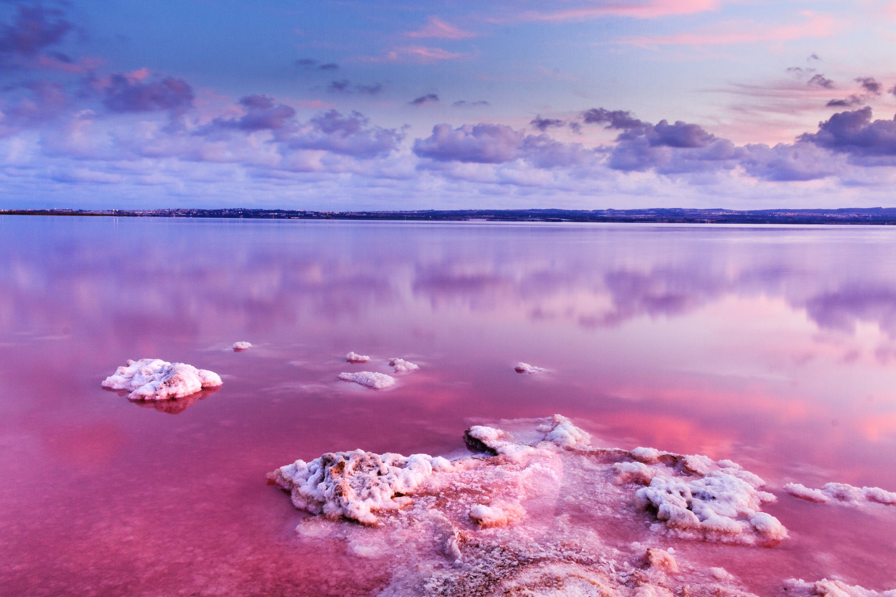
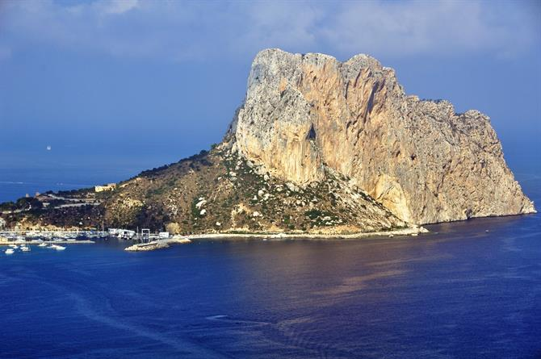
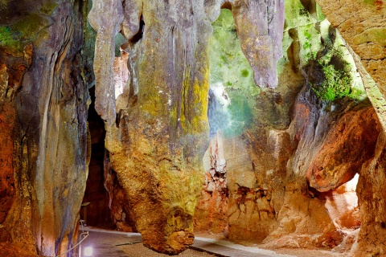
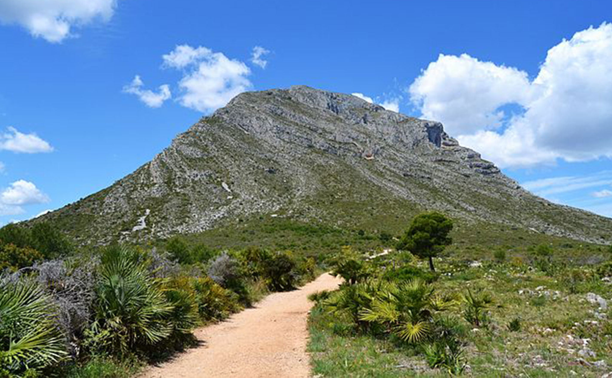
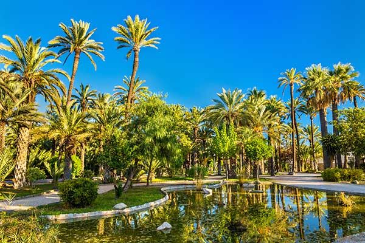
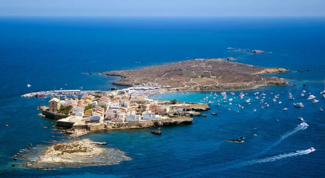
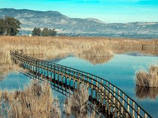

De plek waar de Algar rivier langs het middeleeuwse plaatsje Callosa d'en Sarría stroomt is adembenemed mooi.
Grote rotspartijen zorgen ervoor dat het water trapsgewijs naar beneden stroomt en verschillende poelen vormt waarin je kunt zwemmen.
Parkeerplaats is er voldoende en je kunt er na je plons even wat drinken in het café en zelfs souvenirs kopen.
Probeer in het hoogseizoen vroeg te gaan, want dan is het er vaak stervensdruk.
De watervallen liggen in het binnenland op ongeveer 15 kilometer van Benidorm én van Altea. De omgeving leent zich uitstekend voor een picknick.

Wie ooit in Calpe is geweest, kent hem wel: de typisch gevormde en indrukwekkende rots Peñon de Ifach.
Dit 332 meter hoge icoon ligt een kilometer in zee en is verbonden met het vasteland via een smalle landtong.
El Peñon de Ifach domineert het uitzicht vanuit diverse kustplaatsen aan de Costa Blanca. De rots vormt dagelijks de uitdaging voor tientallen klimmers en zelfs mountainbikers, die het smalle pad omhoog en weer omlaag trotseren voor een prachtig panorama vanaf de top.
Er zijn verschillende routes voor verschillende type wandelaars.
Op heldere dagen is Ibiza te zien. De natuur op de rots is beschermd en het grijsbruine steen vormt het thuis van 300 verschillende plantsoorten, waaronder lavendel.

De grotten van Calaveras in Benidoleig zijn vermoedelijk rond de 100.000 jaar oud. Archeologen troffen er door de jaren heen voorwerpen aan uit het Bronstijd en de Jonge Steentijd.
Verder zijn er indrukwekkende stalagmieten en stalctieten te bewonderen. Toen de grotten in de 18de eeuw werden ontdekt, trof men er 12 menselijke skeletten aan.
Daarom kregen ze 'calaveras' als naam, dat is Spaans voor 'schedels'. Tijdens de Spaanse Burgeroorlog werd de onderaardse ruimte gebruikt als wapenopslagplaats.
Je kunt vreemde en prachtige vormen ontwaren in de rotsen, waaronder een ijsbeer, de buste van de Italiaanse actrice Sophia Loren en zelfs een kaart van Spanje.

Tussen de kustplaatsen Denia en Javea ligt een imposante tafelberg, de Montgo van 753 meter hoog. Dit massief domineert de skyline tot in de verre omtrek.
Vanaf de kant van Javea wordt gezegd dat de berg aan een olifant doet denken.
Het natuurpark is geliefd onder wandelaars en fietsers en er liggen diverse gemarkeerde routes die allemaal een fraai uitzicht bieden alle kanten op.
Op de berg en langs de steile kliffen zijn ruim 650 plantsoorten, waaronder ook unieke in Spanje, aangetroffen.
Diverse soorten roofvogelsoorten voelen zich er thuis. Verder kun je er slangen, hagedissen en konijnen zien.

De stad Elche is beroemd om zijn leerindustrie, maar nog meer vanwege het unieke palmenbos.
Met meer dan 200.000 palmbomen is dit het grootste palmenbos in Europa en een van de grootste ter wereld. Het bos zou zijn oorsprong al hebben in de vijfde eeuw v.Chr.
Sommige bomen zijn ruim 300 jaar oud. De Palmera Imperial is erg beroemd met zeven stammen.
Tussen de palmbomen zijn ook cactussen, mediterrane plantsoorten en citrusbomen te bewonderen. Verder levert het palmenbos veel vijgen en dadels.

Op een uur varen vanuit Alicante, Santa Pola of Benidorm ligt het eiland Tabarca.
Het is slechts twee kilometer lang en een halve kilometer breed. Het is een droom voor liefhebbers van helder water om in te duiken en snorkelen.
De strandjes liggen in schilderachtige baaien en de visrestaurants in de pittoreske haven zijn erg gezellig. Tabarca is het kleinste bewoonde eiland van Spanje.
Van mei tot oktober vertrekt dagelijks een catamaran vanuit de jachthaven van Torrevieja.
br
De natuur op het eiland is beschermd en in Reserva Marina de la Isla de Tabarca leven veel bijzondere vogels.
Ben je liever actief op het land, wandel dan naar de vuurtoren of breng de barokke kerk een bezoek.

El Hondo (El Fondo in het Valenciaans) is een mooie natuurlijke oase tussen Elche en Crevillente.
Het natuurgebied is een walhalla voor vogelliefhebbers en wordt gevormd door twee waterreservoirs, enkele vijvers en kleine moerassen.
Het gebied is van belang omdat er bedreigde en unieke diersoorten leven waaronder veel vogelsoorten zoals de zwartkopmeew, slobeend, steltkluut, buidelmees, flamingo's en roofvogelsoorten zoals de unieke bastaardarend.
In het water begeven zich ook palingen, Iberische tandkarpers, hagedissen en zoetwatergarnalen.
Vanuit observatiehutten die via loopbruggen met elkaar zijn verbonden, kun je verschillende delen van het reservaat verkennen.
